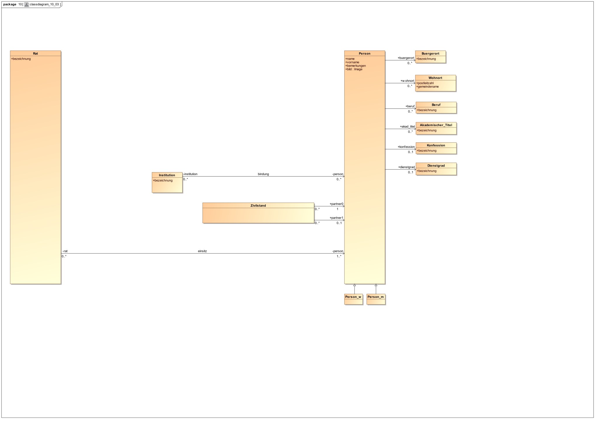
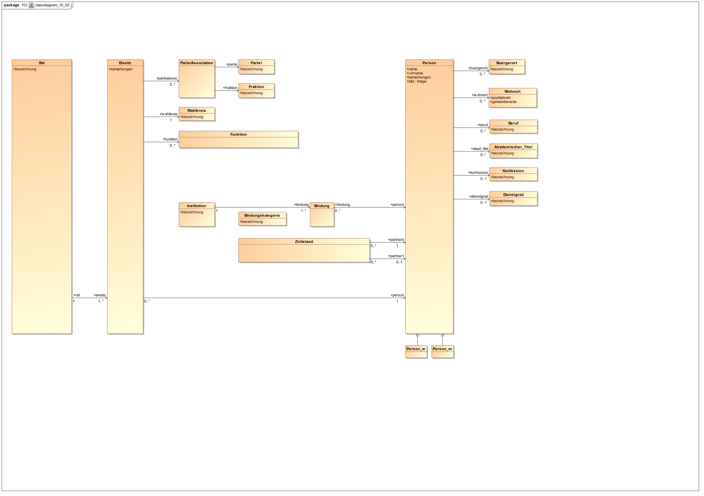
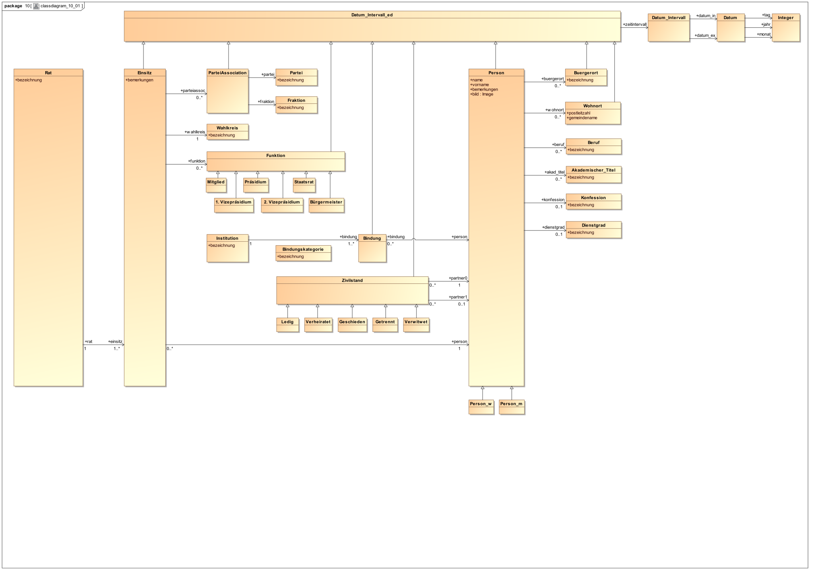
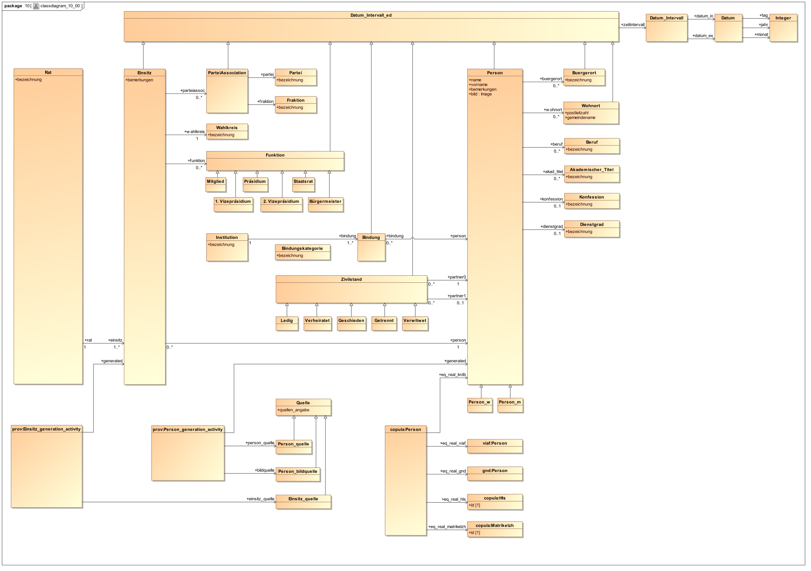

Die Zürcher Kantonsratsdatenbank modelliert die personelle Zusammensetzung der Zürcher Legislative (Grosser Rat / Kantonsrat) und Exekutive (Kleiner Rat / Regierungsrat) im zeitlichen Verlauf seit 1803. "Im zeitlichen Verlauf" heisst, dass alle wichtigen Modell-Elemente mit einer Zeitspanne parametriert sind, die den Gültigkeitsbereich der Existenz bzw. Aussage präzisiert.
In seiner jetzigen Form fokussiert sich das Modell auf die Zusammensetzung des jeweiligen Rates. Der Vorgang, durch den diese Zusammensetzung zustandekommt, z.B. eine Wahl, wird nicht modelliert.
Um die Integration der Kantonsratsdatenbank mit anderen offenen Daten zu erleichtern, wurde die KRDB ins RDF-Format konvertiert, dessen Ökosystem besonders geeignet ist,
.
Das RDF-Modell der Zürcher Kantonsratsdatenbank ist entstanden aus einer Konvertierung der relationalen Kantonsratsdatenbank auf dem "Umweg" über einen xlsx-Export und csv.
Im ersten Schritt wurde eine 1:1-Konvertierung vorgenommen:
Im zweiten Schritt dieser Konvertierung wurden
Die Ergebnisse beider Schritte sind auf dem Triplestore verfügbar.
Bevor im nächsten Abschnitt das Modell vorgestellt wird, erläutern wir zunächst einige Design-Entscheidungen, da mit ihrer Hilfe das Verständnis für die Gestalt des Modells deutlich erleichtert wird. Wer möchte, kann diesen Abschnitt überspringen und später bei Bedarf zurückkehren.
Das wichtigste Modularisierungs-Kriterium ist die Trennung der Meta-Ebenen. Das Wort "Meta" wird dabei im speziellen Sinn der Meta-Modellierung verwendet, wie wir das von der Meta Object Facility der OMG kennen {siehe z.B. Folie 6 in Uwe Assmann: Metamodelling and Metaprogramming}.
Auch wenn uns die technologische Basis des RDF-Oekosystems nicht dazu zwingt, bleibt es eine gute Idee, Modell-Meta-Ebenen getrennt zu halten.
Die beiden wichtigsten Meta-Ebenen sind
Als Modularisierungs-Mittel dienen Namespace-Prefices, wie man sie von XML kennt und sogenannte "Named-Graph"en. Die einzelnen Teil-Modelle werden in separate Named-Graphen abgelegt.
Identifier werden systematisch konstruiert und einmalig bei der Entstehung des jeweiligen Modell-Elements vergeben. Diese Systematik hat globale Eindeutigkeit zum Ziel.
In der RDF-Welt ist es üblich, globale Eindeutigkeit von Identifiern dadurch zu erreichen, dass man Eindeutigkeit separat in einem vorangestellten globalen und einem angehängten lokalen Teil des Identifier-Strings gewährleistet.
Zur globalen Eindeutigkeit setzt man auf die Strukturen des ICANN-gemanageten DNS-Namensraums auf [und kehrt unter den Teppich, dass auch DNS-Domänen nicht ewig gelten...].
Wer eine DNS-Domäne gebucht hat, hat darunter die Hoheit über eine Namensraum-Hierarchie seiner Wahl.
Wir haben uns hier vorläufig für https://ke.ji.zh.ch als Kürzel für "Knowledge-Engineering" unterhalb von "Justiz und Inneres" unterhalb von "Zürich" in der Schweiz entschieden.
Unter dieser Sub-Domain geht es mit "krdbld/${reifegrad}/${meta}/${klasse}" weiter.
Die Werte für "reifegrad" sind bisher
Für "meta" lauten die Werte:
"klasse" nennt bei Instanzen deren [Haupt-]Typ, auf Klassen-|Typ-|Schema-Ebene ist der einzige Wert "omnes".
"https://ke.ji.zh.ch/" spezifiziert den Verantwortungsbereich.
Top-down, von hinten nach vorn gelesen, wie bei DNS-Namen üblich:
"ch" ist die Top-Level-Domain der Schweiz,
"zh" als Second-Level-DNS-Domain ist vom Kanton Zürich registriert,
"ji" steht darunter für "Justiz und Inneres" und
"ke" für das Thema "Knowledge Engineering"
"krdb" steht für das Thema "Kantonsrats-Datenbank"
"ld" steht für die Linked-Data-Version der KRDB
"10" steht für die in ein assoziations-klassen-basiertes Domänen-Modell konvertierte Variante der LD-KRDB
"res" umfasst die Instanz-Ebene des Modells
"person" umfasst die Instanzen der Klasse "Person"
"10003" ist der lokale Identifier der Personen-Instanz {Emil Strehler-Hess}
SELECT ?p ?o
WHERE
{
GRAPH ?g
{
<https://ke.ji.zh.ch/krdb/ld/10/res/person/10003> ?p ?o .
}
}
alle Attribute der Personen-Instanz mit de Emil Strehler-Hess anzeigen.
"genus" steht für die Klassen auf Schema-Ebene des Modells
"omnes" ist der einzige gültige Wert für Klassen. Selbstverständlich ist es nicht sinnvoll, auf Schema-Ebene den Bestand weiter in Klassen zu zersplittern.
"Buergerort" ist der lokale Identifier der Bürgerort-Klasse
"relatio" steht für die Beziehungs-Typen auf Schema-Ebene des Modells
"omnes" ist der einzige gültige Wert für Beziehungs-Typen. Selbstverständlich ist es nicht sinnvoll, auf Schema-Ebene den Bestand weiter in Beziehungs-Typen zu zersplittern.
"buergerort" ist der lokale Identifier des buergerort-Beziehungs-Typs
Es gibt also zwei Modell-Elemente, die ähnlich aussehende IDs haben: die Entität Buergerort und die Beziehung "buergerort". Selbst wenn sie im gleichen Namensraum lägen, könnte man sie unterscheiden, da Gross- und Klein-Schreibung bei IRIs signifikant sind. Da lokale Identifier von Entitäten und Beziehungen im Allgemeinen durchaus gleich sein können können wir sie aber unterscheiden, da im Namensraum einmal "relatio" und einmal "genus" vorkommt.
Named Graphen sind Container, die Mengen von Tripeln zur Laufzeit voneinander getrennt beherbergen. Man nennt Triple-Stores, die dieses Modularisierungs-Mittel anbieten, oft auch Quad-Stores, da die Zugehörigkeit eines Tripels zu einem Named-Graphen dadurch implementiert wird, dass man das Tripel mit dem Graphen-Identifier als viertem Element erweitert wird.
Da LINDAS in diesem Vorhaben die Publikations-Plattform ist, übernehmen wir deren Graphen-Namens-Konvention:
SELECT DISTINCT ?g
WHERE
{
GRAPH ?g
{
?s ?p ?o .
}
}
alle Named-Graphen anzeigen.
Lassen Sie sich mit der SPARQL-AbfrageSELECT *
WHERE
{
GRAPH <https://linked.opendata.swiss/graph/zhkrdb/ld/10/res/rat>
{
?s ?p ?o .
}
}
alle Tripel im Named-Graphen <https://linked.opendata.swiss/graph/zhkrdb/ld/10/res/rat> anzeigen.
Normalerweise werden Tripel in den ihrem Namens-Präfices entsprechenden Named-Graphen abgelegt. Hiervon gibt es zwei Ausnahmen:
Ein fachliches Modell sollte nichts anderes enthalten, als eine Theorie der fachlichen Domäne.
Enthielte dieses Modell auch Anderes, könnte eine Maschine {ein Reasoner z.B.} nicht von sich aus zwischen Fachlichkeit und diesem Anderen unterscheiden.
Deswegen ist es eine wichtige Strategie, die nicht-fachlichen Belange pro Belang jeweils in einen separates Modul, bei uns: einen separaten Named-Graphen, abzuspalten.
Grob kann man sagen: die Syntax {wie kommuniziert man über etwas?} steckt in den Strings, die Semantik {was ist es?} in den Bezügen {also im Graphen}.
Dies ist bereits im Design von RDF verankert:
Auch im Kantonsrats-Modell gibt es viele Klassen, die ein Attribut namens "*bezeichnung" tragen. Das ist ein String-Literal, auf das via eine Property namens "*bezeichnung" verwiesen wird. All diese "*bezeichnung"en sind [im "affix"-Named-Graphen deklariert als] "subPropertyOf" "rdfs:label".
SELECT *
WHERE
{
GRAPH <https://linked.opendata.swiss/graph/zhkrdb/ld/10/genus/omnes>
{
?s rdfs:label ?label .
}
}
alle Labels im Schema-Graphen <https://linked.opendata.swiss/graph/zhkrdb/ld/10/genus/omnes> anzeigen.
Ein typischer nicht-fachlicher Belang vieler Modelle sind Angaben über die Herkunft einzelner Modell-Bestandteile. Dabei werden typischerweise Aussagen gemacht, in welchem Kontext {wann, wo, von wem} ein Modell-Element erzeugt wurde.
Wenn wir philosophische Spitzfindigkeiten aussen vor lassen, können wir sagen: es gibt eine Realität und viele Modelle davon. Jedes Modell ist eine stark vereinfachte Perspektive auf die Realität.
Im Allgemeinen entwickeln sich nach Bedarf und unkoordiniert {woher sollten die Modellierer auch vor der Publikation schon voneinander wissen} verschiedene Modelle derselben Dinge der Realität.
Später erfahren die Modellierer von dem Tatbestand, dass es auch andere Modelle derselben Dinge gibt. Aus diesem Muster hat sich die Disziplin des sogenannten Ontology-Mapping entwickelt. Im Kern repräsentieren alle Ontology-Mapping-Ansätze das reale Ding durch einen Knoten im Modell, der als Attribute Verweise auf die anderen Modell-Elemente enthält, die das gleiche Real-Ding modellieren.
Da die verschiedenen Modelle ein und derselben Real-Sache nichts miteinander gemein haben, wird solch ein Mapping-Angel-Punkt typischerweise nur für Navigations-Zwecke, aber nicht für semantische Zwecke {z.B. zum Inferieren} benutzt.
Wie in jeder Programmier-Sprache gibt es auch in RDF eine Möglichkeit, das Vorliegende zu dokumentieren. Dies wird durch eine spezielle, vordefinierte Beziehung namens "rdfs:comment" ausgedrückt.
Obwohl es im Wortsinn eine Meta-Aussage über ein Modell-Element ist, und damit eigentlich keinem fachlichen Zweck dient -- man es unserer oben formulierten Strategie nach also dem fachlichen Modell weg-separieren sollte -- haben wir darauf verzichtet, dies zu tun, da "der Rest der Welt" es auch nicht tut, was in der Praxis dann mangels entsprechender Convention dazu führen würde, dass man nur nach der Dokumentation suchen würde [oder nicht mal das, da man sie evtl. für gar nicht existent hielte].
SELECT *
WHERE
{
GRAPH ?g
{
?s rdfs:comment ?comment .
}
}
alle Kommentare unserer Bestände anzeigen.
Zur Integration mit anderen Quellen gibt es im RDF-Ökosystem mindestens die folgenden Mechanismen:
Die einfachste und natürlichste Form der Wiederbenutzung ist die direkte Verwendung. Dazu gibt man einfach den Identifier des Modell-Elements, das man benutzt, an.
Selbstverständlich holt man sich damit die ganze Semantik, die an diesem Modell-Element hängt, "ins Haus". Das ist gut so -- sollte aber auch der eigenen Absicht entsprechen.
Das aktuelle KRDB-LD-Modell nutzt keine Fremd-Modell-Elemente im semantischen Sinn direkt. Lediglich im Ontologie-Mapping-Graphen werden Fremd-Identifier benutzt, im folgenden Beispiel die der Gemeinsamen Norm-Datei:
SELECT *
WHERE
{ GRAPH <https://linked.opendata.swiss/graph/zhkrdb/ld/10/copula/person>
{
?s <https://ke.ji.zh.ch/krdb/ld/10/relatio/omnes/eq_real_gnd> ?o .
}
}
Mit einer "federated Query" kann man an einen SPARQL-Endpoint eine "SERVICE"-Teil-Abfrage stellen, die er an einen anderen SPARQL-Endpoint weitergibt und dessen Ergebnisse in den lokalen Abfrage-Teil integriert:
SELECT ?a
FROM <mybooks.rdf>
{
?b dc:title ?title .
SERVICE <http://sparql.org/books>
{ ?s dc:title ?title . ?s dc:creator ?a }
}
Hier nutzen mehrere Instanz-Ressourcen die selbe Ontologie {Modell auf Klassen-Ebene, Theorie}. Werden mehrere solche Instanz-Ressourcen parallel zusammen genutzt, fühlen sie sich bei der Nutzung, z.B. SPARQL-Queries an als wären sie eins. Sie haben ja die gleiche Struktur und die Muster im Bedingungsteil von Abfragen sind immer am [gemeinsamen] Meta-Modell entlang gebaut.
Modelle wachsen [leider] meistens von unten nach oben und tragen ihre eigenen aus dem lokalen ad-hoc-Kontext entstandenen Strukturen. Stellt man später fest, dass Teil-Strukturen zu anderen, evtl. schon verbreiteteren Modellen passen, kann man durch einen simplen Trick {die Idee dahinter ist die gleiche wie beim "Adapter"-Pattern des GoF-Buchs} Kompatibilität herbeiführen:
Man behauptet einfach, eine eigene Struktur sei Sub-Struktur einer bestimmten Fremdstruktur, die ähnlich genug aussieht.
Der Zweck dieses Einhaengens ist die Vereinfachung von SPARQL-Queries und anderen Meta-Modell-spezifischen Traversier-Taetigkeiten.
Generell muessen SPARQL-Queries an der Struktur des befragten Materials ausgerichtet sein. Werden mehrere Quellen unterschiedlicher Struktur gleichzeitig befragt, fuehrt dies zu Abfragen, die die gesamte [benutzte] Strukturvielfalt beinhalten. Der Anteil der Struktur-Vielfalt, der keine fachliche Ursache hat, sondern Syntactic-Sugar der Modellier-Beliebigkeit des Materials darstellt, kann wegreduziert werden, wenn man bedeutungsgleiche Struktur-Elemente von einem gemeinsamen externen "Aufhaenger" subsumieren (=erben) laesst. Das RDFS-Inferencing des Triple-Stores sorgt dann dafuer, dass man fuer jeden Aufhaenger auch all dessen Sub-Strukturen (Sub-Klasse, Sub-Property) geliefert bekommt. Damit blickt ein Abfrager sozusagen mit der Brille der Einhaenge-Ontologie auf das Material, das "die da, in der Zuercher Enge" gebastelt haben und braucht sich nur insoweit um unsere lokalen Modellier-Details kuemmern, wie sie sich vom Subsumierten unterscheiden [sofern das fuer ihn relevant ist].
Ein häufig verwendeter Fall ist, eine Beziehung im eigenen Modell, die auf ein Literal zeigt, zur subPropertyOf rdfs:label zu machen.
Sucht dann jemand nach allen Labels, bekommt er automatisch auch die eigenen Literal-Attribute mitgeliefert.
Wie oben schon gesagt, sind Ontologie-Mapping-Informationen ihrem Wesen nach nicht semantisch. Trotzdem sind die Verweis-Kanten ein Hilfsmittel um Redundanzen im Grossen zu verringern und die anderen, gerade genannten Intergrations-Mechanismen zu unterstützen.

Die beiden zentralen Entitäten des Modells sind "Rat" und "Person".
Im obigem UML-Diagram liegt die Rats-Entität ganz links, da sie das komplexeste Objekt ist.
Diese Abhängigkeits-Richtung ist auch ganz natürlich, da man erwartet, den Rat nach seinen Mitgliedern befragen zu können, während es unangemessen anstrengend wäre, jede Person des "Universums" danach zu befragen, welcher Räte Mitglied sie ist.
Die zweite essentielle Entität ist die Person. Das Kantonsrats-Modell zeichnet hierfür das Bild eines Bürgers, der Beziehungen zu anderen Personen {via Zivilstand} und zu Institutionen haben kann, irgendwo wohnt, einen Beruf, ggf. akademischen Titel, eine Religionszugehörigkeit, ein Geschlecht und als schweizer Spezialität einen Bürgerort "hat".
Die Menge an hier so beschriebenen Personen-Instanzen umfasst bisher Menschen, die irgendwann einmal Mitglied eines Zürcher Rates waren sowie deren Ehepartner. Es spräche aber nichts dagegen, eine Personen-"Liste" in Anspruch zu nehmen, die umfassender, also nicht auf Ratsmitglieder beschränkt ist.
Gewissermassen ist "Person" eine abstrakte Klasse, da sie eine geschlechtslose Person modelliert. Davon gibt es typischerweise keine Instanzen.
Das Geschlecht einer Person ist als entsprechende Subklasse von Person modelliert:
Bereits in obigem UML-Diagramm sehen wir die einfachen Beziehungen, die "Person" zu ihren Attributen hat {Wohnort, Beruf, ...}. Diese Beziehungen werden weiter unten kurz erläutert.
Die wichtigen Beziehungen in unserem Modell sind aber in Wirklichkeit komplexer als wir sie in obigem UML-Diagramm dargestellt haben. Sie tragen vielmehr als Nutzlast ein kleines Modell, das die Art der Beziehung im Detail beschreibt. Ein Mittel, diese Nutzlast an eine Beziehung zu hängen, ist, die direkte Kante durch eine Assoziationsklasse zu unterbrechen, an der dieses kleine Beziehungs-Modell hängt. In unserem Fall lauten diese Assoziationsklassen "Einsitz", "Bindung" und "Zivilstand":

Die zentrale Beziehung des Modells ist die der Mitgliedschaft, die beschreibt, welche Personen dem Rat während welcher Zeitspannen angehört haben. Eine Person steht also in der Rolle eines Mitglieds in Beziehung zum Rat.
An dieser Beziehung hängt über die Assoziationsklasse "Einsitz" als "Nutzlast" ein kleines Modell, das den Charakter der Mitgliedschaft genauer beschreibt:
Um mögliche Interessenskonflikte, in denen ein Ratsmitglied stehen könnte, transparenter zu machen, werden Institutionen modelliert, die an eine Person Erwartungen an sein Verhalten haben könnten. Z.B. sind das wirtschaftliche Verpflichtungen, die eine Person -- insbesondere ein Ratsmitglied -- gegenüber einer Institution haben kann, von der er Geld erhält, z.B. Unternehmensbeteiligungen.
Seit Beginn dieses Jahrhunderts ist die Transparenz sogar als Offenlegungspflicht für Interessensbindungen gesetzlich festgeschrieben, im Kt. ZH zB im Kantonsratsgesetz LS 171.1 . 5a, ebenso für den Regierungsrat (RRB 2017/112). Zumindestens die polit. Bindungen wurden hier in der KRDB auch fallweise auch für ältere Mitglieder erhoben, z.B. "Gemeinderat Meilen - Präsident, von-bis"...
Interessenskonflikte können sich aber nicht nur durch wirtschaftliche Beziehungen ergeben. Auch soziale Bindungen eines Rates können sein Verhalten beeinflussen. Die herausragende aktenkundige soziale Beziehung ist die eheliche Beziehung zu einem Partner. Diese Beziehung ist durch den Zivilstand modelliert.
Bisher haben wir das Kern-Skelett des Modells skizziert. Das komplette fachliche Modell enthält aber noch weitere Feinheiten:

Insbesondere zeigt es, dass die meisten Modell-Sachverhalte nur während bestimmter Zeit-Intervalle gültig waren. Das UML-Modell oben stellt dies als Zeit-Intervall-Klasse {ganz oben} dar. Im KRDB-Modell sind Zeitintervalle aber nicht errerbt, sondern "inline" in den jeweiligen Entitäten selbst enthalten.
Ausserdem sind nun die möglichen Werte Spezialisierungen für "Funktion" und "Zivilstand" ausmodelliert.
Von der Person zu unterscheiden sind die Rollen, in denen eine Person in einer Situation auftreten kann. Diese Rollen sind beschrieben als die Beziehungen, die auf eine Person[en-Entität] verweisen.
Der genauere Charakter der Mitgliedschaft einer Person in einem Rat ist von mehreren "Parametern" geprägt. Es ist üblich, solche reichhaltigen Beziehungen sozusagen zu verdinglichen. Man unterbricht dabei die Beziehung durch einen Knoten, der die ganze Nutzlast der Characteristica der Beziehung trägt. Einen solchen Zwischen-Knoten nennt man Assoziations-Klasse.
Die Assoziationsklasse, die die Characteristica der Mitgliedschaft einer Person in einem Rat trägt, heisst in unserem Modell "Einsitz".
Normalerweise ist eine Person während eines Einsitzes in einem Rat einfaches Mitglied.
Sie kann aber während bestimmter Perioden eine spezieller Art der Mitgliedschaft bekleiden, z.B. als Rats-Präsident. Im UML-Diagramm oben sind diese Unterarten als Subklassen von "Funktion" dargestellt. Im RDF-Modell sind die Unterarten als Sub-Properties der allgemeinen Mitglieds-Property modelliert.
Eine Person kann während eines Einsitzes zu bestimmten Perioden als Vertreter einer Partei und als Vertreter einer Fraktion Mitglied des Rates sein.
"ParteiAssociation" ist eine Assoziationsklasse, die die Beziehung von Einsitz zu Partei und Fraktion genauer beschreibt.
Partei ist das, was auch der Bürger "draussen auf der Strasse" unter Partei versteht.
Im gegebenen Modell hat diese Entität keine weitere Struktur.
Fraktion ist das, was auch der Bürger "draussen auf der Strasse" unter Fraktion versteht.
Im gegebenen Modell hat diese Entität keine weitere Struktur.
Diese Angabe ist der Wahlkreis, als Vertreter dessen ein Mitglied in einem Rat einsitzt.
SELECT *
WHERE
{
GRAPH ?g_einsitz
{
?einsitz rdf:type kr_10_genus:Einsitz .
?einsitz kr_10_rel:person ?person .
?einsitz kr_10_rel:einsitz_parteiassoc ?pa .
}
GRAPH ?g_pa
{
?pa kr_10_rel:assoc_partei ?partei .
}
GRAPH ?g_partei
{
?partei kr_10_rel:partei_bezeichnung "CVP" .
}
GRAPH ?g_person
{
?person rdf:type kr_10_genus:Person .
?person rdfs:label ?label .
}
GRAPH ?g_einsitz
{
?einsitz kr_10_rel:funktion ?fkt .
}
GRAPH <https://linked.opendata.swiss/graph/zhkrdb/ld/10/res/funktion>
{
?fkt rdf:type kr_10_genus:Funktion__Präsidium .
}
}
Eine Person, die Ratsmitglied ist, steht üblicherweise nicht isoliert in der Gesellschaft, sondern hat weitere Beziehungen zu anderen Personen und Institutionen. Die Kantonsratsdatenbank modelliert die Beziehung zwischen Institutionen und Personen um transparent zu machen, welche anderen, ausser Partei- und Fraktions-Interessen eine Rats-Mitglieds-Person möglicherweise verfolgt.
"Bindung" ist eine Assoziationsklasse, auf der Beziehung zwischen Institutionen und Personen. Die Art der Bindung ist durch die Angabe der Bindungskategorie parametriert, die die spezielle Art der Bindung zwischen einer Person und einer Institution ausdrückt. Der einzige Wert, der momentan im Datenbestand vorkommt, ist "politisches Amt".
Eine besonders gut fassbare enge Beziehung zu anderen Personen ist Ehe.
Deshalb modelliert die KRDB die Lebensphasen, während der und mit wem die Räte verheiratet waren.
Mit dem "neuen" KRDB-LD-Modell könnten auch [Interessens-]Bindungen von Ehe-Partnern erfasst werden. Der bisherige Datenbestand bringt solche Angaben nicht mit.
Name und Vorname sind zwei spezielle Labels mit denen man über eine Person spricht.
UML-technisch hängt ein String-Literal über eine Beziehung {"Property"} "name" bzw. "vorname" an Personen. Die Beziehungen "name" und "vorname" werden im "affix"-Named-Graphen als subPropertyOf "rdfs:label" deklariert.
Von einer bürgerlichen Person soll man wissen, wann sie wo offiziell gewohnt hat.
Der Datentyp von Wohnort ist eigentlich eine Adresse {kein Postfach}, das in der Rolle eines Wohnorts zu einer Person steht.
Strasse und Hausnummer fehlen im aktuellen KRDB-Modell.
Der Bürgerort ist eine Spezialität des schweizer Bürger-Personen-Modells. Der Bürgerort ist eine Gemeinde, die langfristig grundlegende Bürgerdaten verwaltet und bis 1926 auch armenrechtlich eine grosse Rolle spielte. Auch der Bürgerort einer Person kann sich aber von Zeit zu Zeit ändern.
Auch Beruf, Akademischer Titel, Dienstgrad und Konfession werden als prägend für das Wesen einer [Rats-]Person erachtet.
Die Instanzen dieser Angaben sind durch Objektifizierung von String-Attributen des ursprünglichen Datenbestandes entstanden. Dort wurden sie größtenteils treu von den Originalquellen ("offiziellen" Publikationen Regierungsetats, Staatskalender und Kantonsratslisten) übernommen und bisher nicht mit heutigen "offiziellen" Listen abgeglichen. Auch Schreibweisen-Variationen von Dingen, die eigentlich das Gleiche bedeuten, sind bisher noch nicht zusammengezogen.
Auch diese durch Objektifizierung entstandenen Klassen enthalten den Klassen-Namen im Prefix des Identifiers: .../10/res/${klassen_name}/, z.B. .../10/res/beruf/Önologin
Führen Sie noch einmal die im Abschnitt 'Identifier-"Syntax"' angegebene SPARQL-Abfrage durch. Ersetzen Sie den dort konkret angegebenen Personen-Identifier durch die Variable "?person". Evtl. können Sie an die Abfrage ein "ORDER BY ?person" anhängen, um die Ergebnisse nach Personen-ID zu sortieren.

Für die beiden Entitäten "Einsitz" und "Person" werden Herkunfts-Angaben {"*quelle"} gepflegt. Sie sind in den links unten hinzugekommenen Modell-Sektionen zu sehen.
In Anlehnung an die Strukturen von "Prov-O" betrachten wir Modell-Elemente als das Ergebnis einer Erzeugungs-Aktivität. Dh. man geht davon aus, dass ein [meistens menschlicher] Aktor im Rahmen eines Erzeugungs-Prozesses ein Modell-Element unter Hinzuziehung von Quell-Material hervorgebracht hat. Eine solche Aktivität {"Einsitz_generation_activity", "Person_generation_activity"} bezieht sich auf das, was erzeugt wurde {"Einsitz", "Person"}. Sie nennt ausserdem die hinzugezogene Quelle. Typischerweise sagen Erzeugungs-Aktivitäten auch, wann sie begonnen und beendet wurden. Entsprechende Angaben fehlen in unserem Modell.
Im UML-Modell finden sich die entsprechenden Klassen links unten.
Im Identifier-Prefix enthalten die Aktivitäten den Teil-String "prov". Sie werden in einem Named-Graphen mit dem Teil-String "meta" im Identifier abgelegt.
Die folgende Beispiel-SPARQL-Abfrage liefert zu allen Personen die vorhandenen Quell-Angaben:
# von einem Person-Modell-Element kommt man zu seiner Quelle ueber die ?person_erzeugung-Aktivitaet: # Sinn dieses "Umwegs" ist die Angleichung an die Modellierung von Prov-O, wo Dinge (Dokumente, Modell-Elemente) aus Aktivitaeten (Erzeugung, Aenderung) entstehen. Diese Aktivitaeten benutzen ursprueglicheres Material, in unserem Fall die ?person_quelle, die mit "person_quellen_angabe" verbal beschreibt, wo das Person-Modell-Element herkommt.
SELECT ?person ?person_erzeugung ?person_quelle ?p ?o
WHERE
{ graph <https://linked.opendata.swiss/graph/zhkrdb/ld/10/meta/person>
{
?person_erzeugung kr_10_rel:generated ?person .
?person_erzeugung kr_10_rel:person_quelle ?person_quelle .
?person_quelle ?p ?o .
}
}
ORDER BY ?person
Unsere Artgenossen sind für uns so ungeheuer wichtig, dass sich gerade bei ihrer Modellierung eine endlose Vielfalt von Modellen entwickelt hat. Selbst für recht abstrakte Bürger-Modelle ist die Vielfalt noch gross. Die Modellierer der Kantonsratsdatenbank waren sich dessen auch bewusst. Sie haben, soweit ihnen bekannt, Bezüge {Identifier} zu einigen anderen Personen-Modellen in ihr Modell eingebaut. Das Bündel dieser Bezüge ist im Modell durch die "Klasse" "copula:Person" verkörpert, die in obigem Diagramm mit den Fremd-Personen-Klassen unterhalb der Klasse "Person" zu finden ist.
Wie in obigem Abschnitt "Bezüge zu anderen Modellen" schon erwähnt, tragen solche Referenzen keine fachliche "Nutzlast", dh. sie machen keine Seins-Aussagen über den Charakter von Personen. Deshalb wurde für jede hier bekannte Real-Person ein Modell-Knoten erzeugt, der keine ontologischen Aussagen macht. Von diesem Knoten gehen nur Bezüge zu den uns bekannten Entitäten aus, die die gleiche Real-Person in unserem Modell und anderswo modellieren. Eigentlich wäre hierfür ein sogenannter Blank-Node {ein Modell-Knoten ohne Identifier} das angemessene Ausdrucksmittel. Wir haben ihm dennoch einen Identifier "spendiert", da er für das ressourcen-übergreifende Ansprechen nötig ist. Dieser Identifier trägt als "meta"-Sektion den String "copula".
Man kann über diese Real-Personen-Nabe zu anderen Modellen, die Aussagen über die gleiche Real-Person machen, navigieren. Diese anderen Modelle der gleichen Real-Person werden, da sie ganz unabhängig von unserem Modell entstanden sind, andere Aspekte dieser Person modellieren. Man sollte also nicht erwarten, dass diese anderen Modelle die gleichen Aussagen über die gleiche Person machen! Allerdings würde es Klärungsbedarf provozieren, wenn die Aussagen nicht ergänzend, sondern widersprüchlich wären.
In obigem UML-Klassen-Diagramm liegt die Klasse, die die Real-Person repräsentiert, etwas links unterhalb der Personen-Klasse.
Alle Klassen, die in obigem Klassen-Diagramm nur eingehende "Pfeile" haben, also nur von anderen Entitäten "benutzt" werden, sind eher einfache Dinge.
Einfache Dinge sind aber hochgradig wiederbenutzbar. Wir werden also nicht lange suchen müssen, um andernorts bereits, vermutlich sogar besser gepflegte, Modelle für diese Dinge zu finden.
Parteien, Fraktionen, Wahlkreise, Zivilstände, [Wohn|Bürger]orte, Berufe, akademische Titel, Dienstgrade und Konfessionen sind solche Dinge, bei denen wir danach trachten sollten, sie zukünftig von einer authentischeren Quelle zu beziehen.
Als Zwischenlösung kann man symptomatisch mit federated SPARQL-Queries entsprechendes Fremd-Material ansprechen.
Im Zuge des KRDB-LODifizierungs-Projekts haben wir nach Fremd-Ontologien gesucht und einige Parlaments-, Personen- und Grundlagen-Ontologien davon im Hinblick auf die direkte Verwendung in unserem Modell evaluiert.
Leider fanden sich dabei keine derart passenden Referenz-Ontologien, dass wir unsere Räte und Personen zu direkten Instanzen dortiger Typen hätten machen wollen.
Wir haben uns für den oben schon angedeuteten etablierten Mechanismus einer etwas loseren Kopplung entschieden und vorgesehen, dass man sie in eine dieser Ontologien nach Wahl einhängen kann.
Wir haben oben bereits im gleichnamigen Theorie-Abschnitt angedeutet, wie Namen und Vornamen als Spezialisierungen von "rdfs:label" benutzt werden können. Konkret implementiert sind diese beiden Subsumptionen durch zwei Tripel im Named-Graphen "<https://linked.opendata.swiss/graph/zhkrdb/ld/10/affix/omnes>":
kr_10_rel:nachname rdfs:subPropertyOf rdfs:label .
kr_10_rel:vorname rdfs:subPropertyOf rdfs:label .
Damit haben wir unsere eigenen Beziehungen "vorname" und "nachname" in eine entsprechende Überbeziehung "label" der RDFS-Ontologie eingehängt.
Mit dieser SPARQL-Abfrage können Sie das überprüfen:SELECT *
WHERE
{
# alle Label im Graphen "person":
GRAPH <https://linked.opendata.swiss/graph/zhkrdb/ld/10/res/person>
{
?s rdfs:label ?label .
}
}
ORDER BY ?s
#
# Sie werden sehr wahrscheinlich eine leere Ergebnis-Liste erhalten
# Schalten Sie nun Reasoning ein und wiederholen Sie die Abfrage!
# welche Labels erhalten Sie jetzt?
# Warum erhalten Sie pro Subjekt mehrere Labels?
# Welches sind die Properties, die die erhaltenen Subjekte mit den erhaltenen Objekten verbinden?
# In welchem Graphen befindet sich die verantwortliche "subPropertyOf"?
# Wie lange hat der Triplestore jeweils mit seiner Antwort gebraucht?
kr_10_genus:Person rdfs:subClassOf <http://www.w3.org/ns/person#Person> .
testweise die KRDB-Person zur Subklasse dieser Person gemacht.
Wenn Sie mit einschaltetem Reasoning nach den Instanzen der Klasse <http://www.w3.org/ns/person#Person> suchen, werden Sie damit auch die KRDB-Personen-Instanzen als Ergebnisse geliefert bekommen.
Die in CIDOC-CRM modellierte Person stellt eher biologische Aspekte in den Kern der Betrachtungen.
Auch diese Person haben wir testweise im Named-Graphen "<https://linked.opendata.swiss/graph/zhkrdb/ld/10/affix/omnes>" mit dem Tripelkr_10_genus:Person rdfs:subClassOf <http://www.cidoc-crm.org/cidoc-crm/E21_Person> .
zu einer Superklasse unserer KRDB-Person gemacht.
Auch hier werden mit eingeschaltetem Reasoning KRDB-Personen zu Instanzen der CIDOC-Personen-klasse.
In beiden Fällen tun wir mit dem Einhängen einen Dienst an den jeweiligen Communities, da sie nun auch unsere Personen in "ihren" Beständen finden [wenn ihre Queries auch den KRDB-Tripel-Bestand erfassen].
Suchen Sie jetzt mal [mit eingeschaltetetem Reasoning natürlich] nach Instanzen von foaf:Person ... . Warum bekommen Sie Resultate?
Momentan kann man mit dem KRDB-LD-Modell auf der Test-Instanz von LINDAS zu Test-Zwecken arbeiten. Der Inhalt kann sich aber noch ändern.
Auf dem openZH/krdb-lod-github-Bereich findet man einige Beispiel-Abfragen zum bequemeren Einstieg.